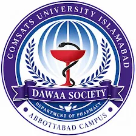
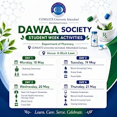
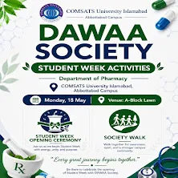
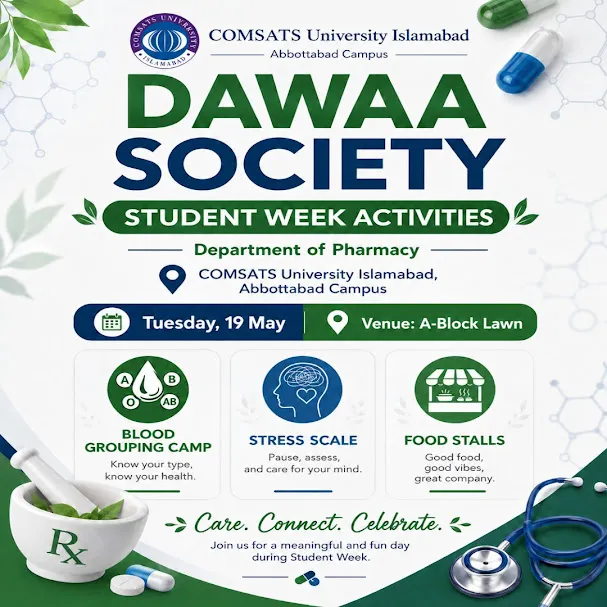
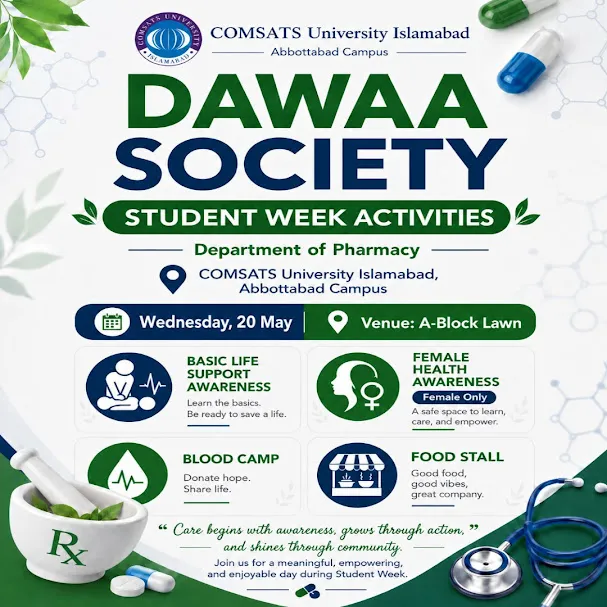
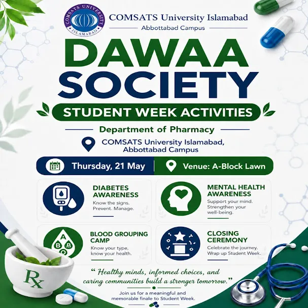

📋 Table of Contents
- Department of Pharmacy — COMSATS Abbottabad
- What Is the Dawaa Society?
- Student Week 2026 — Overview
- Day 1 (Mon, 18 May) — Opening Ceremony & Society Walk
- Day 2 (Tue, 19 May) — Blood Grouping, Stress Scale & Food
- Day 3 (Wed, 20 May) — BLS, Female Health & Blood Camp
- ⭐ Female Health Awareness — Why It Matters
- Day 4 (Thu, 21 May) — Diabetes, Mental Health & Closing
- Frequently Asked Questions

Department of Pharmacy — COMSATS University Islamabad, Abbottabad Campus
Nestled among the green hills of Abbottabad, the Department of Pharmacy at COMSATS University Islamabad, Abbottabad Campus is one of the most respected pharmaceutical education institutions in Khyber Pakhtunkhwa. Established to bridge academic pharmacy with community healthcare, the department offers a rigorous Doctor of Pharmacy (Pharm-D) programme that blends pharmaceutical sciences, clinical training, and active public health outreach.
The department's faculty — composed of qualified pharmacists, researchers, and healthcare educators — equips students not just with scientific knowledge, but with a deep sense of social responsibility. Graduates are trained to see themselves as frontline healthcare providers: counselling patients, promoting wellness, and stepping into communities that need them most.
State-of-the-art laboratories in pharmaceutical chemistry, pharmacognosy, pharmacology, and clinical pharmacy, combined with affiliations with leading teaching hospitals in the region, make this department a living bridge between the classroom and real-world healthcare delivery.
Quick Facts — Department of Pharmacy, COMSATS Abbottabad
- Location: University Road, Abbottabad, Khyber Pakhtunkhwa, Pakistan
- Degree Offered: Doctor of Pharmacy (Pharm-D)
- Focus Areas: Clinical pharmacy, pharmaceutical sciences, public health
- Affiliation: COMSATS University Islamabad (HEC Recognised)
What Is the Dawaa Society?
Every great department needs a student body that gives it its soul — and for the Department of Pharmacy at COMSATS Abbottabad, that soul is the Dawaa Society.
The name says it all. Dawaa (دوا) is the Urdu word for medicine. It is fitting, then, that this society exists to bring the healing, caring spirit of pharmacy into every corner of campus life.
Established and run entirely by pharmacy students under faculty guidance, the Dawaa Society organises health awareness campaigns, free medical camps, educational seminars, and student wellness events throughout the academic year. It creates a platform where students can apply classroom learning to real-world public health challenges — developing the leadership, empathy, and communication skills that no textbook alone can teach.
"Healthy minds, informed choices, and caring communities build a stronger tomorrow." — Dawaa Society motto
What the Dawaa Society Does Year-Round
- Free community health camps and blood grouping drives
- Health awareness seminars and workshops
- Mental health and student wellness events
- Annual Student Week — the flagship event of the year
Student Week 2026 — Four Days, One Mission
This year, the Dawaa Society organised a landmark four-day Student Week, running from Monday 18 May to Thursday 21 May 2026, at the A-Block Lawn, COMSATS University Islamabad, Abbottabad Campus. It was the society's most ambitious programme to date — packed with health camps, awareness sessions, community activities, and a lot of heart.

Dawaa Society Student Week 2026 — Complete four-day programme at A-Block Lawn, COMSATS Abbottabad
Day 1 — Monday, 18 May 2026

Day 1 activities: Student Week Opening Ceremony and Society Walk
Opening Ceremony
The week kicked off with a Student Week Opening Ceremony that set the tone for everything that followed. Faculty members, pharmacy students, and campus guests gathered at the A-Block Lawn for speeches, introductions, and the formal unveiling of the week's programme. The ceremony underlined the core message of the Dawaa Society: pharmacy is not just a profession — it is a commitment to community health.
Society Walk
Following the ceremony, students took part in a Society Walk across the campus — a symbolic march that doubled as a live demonstration of what the society stands for. Walking side by side, students from all years bonded over a shared identity: future pharmacists who are ready to serve. The walk also promoted physical activity as part of a healthy lifestyle, sending a subtle but clear public health message from step one.
"Every great journey begins together." — Day 1 Theme
Day 2 — Tuesday, 19 May 2026

Day 2 activities: Blood Grouping Camp, Stress Scale assessment, and Food Stalls
Blood Grouping Camp
Day 2 opened with one of the most immediately useful activities of the entire week: a free Blood Grouping Camp. Pharmacy students trained in clinical procedures conducted rapid blood group testing for students and staff. For many participants, this was the first time they had ever had their blood type professionally confirmed.
Knowing your blood group is foundational medical knowledge — it matters in surgeries, transfusions, pregnancies, and emergencies. As the Dawaa Society put it simply: "Know your type, know your health."
Stress Scale
In a thoughtful acknowledgement of the pressures of university life, the Dawaa Society set up a Stress Scale station. Using validated self-assessment tools, students were guided to evaluate their stress levels, identify triggers, and receive practical tips from pharmacy students trained in clinical counselling. In Pakistan, where mental health conversations remain stigmatised, even this simple act of saying "your stress is real, and it matters" was quietly radical.
Food Stalls
Because health is also about joy — Food Stalls ran throughout the day, creating a social hub where students from across departments could come together, share a meal, and enjoy the kind of easy community that makes university life memorable. Good food, good vibes, great company.
"Care. Connect. Celebrate." — Day 2 Theme
Day 3 — Wednesday, 20 May 2026

Day 3 activities: Basic Life Support awareness, Female Health Awareness (females only), Blood Camp, and Food Stall
Basic Life Support (BLS) Awareness
Day 3 began with something that could one day save a life in a hallway, a market, or a home: a Basic Life Support (BLS) Awareness session. Pharmacy students walked participants through CPR technique, recovery positions, checking for responsiveness, and the critical window of action before emergency services arrive.
Why BLS Matters
In cardiac arrest, every minute without CPR reduces survival chances by 7–10%. Most Pakistanis have never received basic first aid training. Sessions like this fill a critical public health gap — turning bystanders into potential lifesavers.
Blood Donation Awareness Camp
Building on Day 2's blood grouping camp, Wednesday also featured a Blood Donation Awareness Camp. Pakistan faces a chronic shortage of safe voluntary blood donations, making community outreach like this essential. Students learned about donation eligibility, the process, and the direct impact a single unit of blood can have — potentially saving up to three lives.
⭐ Female Health Awareness — The Most Important Session of the Week
Without question, the most significant event of Student Week 2026 was the Female Health Awareness Session held on Day 3. Organised exclusively for female students, this session created something Pakistan's campuses desperately need but rarely provide: a safe, informed, judgment-free space where women can learn about their own health.
Why does this matter so much in Pakistan?
Pakistan's women face a compounding crisis of health illiteracy, cultural taboos, and structural barriers to healthcare. The data is stark:
- Pakistan has one of the highest maternal mortality rates in South Asia — many deaths preventable with basic prenatal awareness
- Breast and cervical cancer are among the most common cancers in Pakistani women, yet early detection rates remain very low due to lack of awareness and stigma around self-examination
- PCOS, endometriosis, and severe anaemia affect a significant proportion of Pakistani women but are often misdiagnosed or left untreated
- Iron deficiency anaemia affects nearly half of Pakistani women and girls — yet most are unaware of the symptoms or dietary solutions
- Postpartum depression and anxiety among new mothers are widely undiagnosed due to social stigma and lack of mental health literacy
The Dawaa Society's session confronted these gaps head-on. Conducted by female pharmacy students and healthcare educators in a comfortable, private environment, the session covered:
- Reproductive and menstrual health: Understanding cycles, hormonal balance, and when to seek medical attention
- Breast self-examination: Step-by-step technique for early detection of abnormalities
- Nutritional needs: Iron, calcium, vitamin D — the nutrients most Pakistani women are deficient in
- Mental health: Recognising anxiety, depression, exam burnout, and knowing when to seek help
- Hygiene and preventive care: Science-backed practical guidance to prevent infections and long-term complications
What made this session truly powerful was its intentionality. The "Females Only" designation was not exclusion — it was the opposite: a deliberate act of inclusion, creating a space where women could speak freely without embarrassment, ask questions they might have carried for years, and receive accurate medical information from someone who understands their lived reality.
In an environment where women's bodies are simultaneously over-scrutinised socially and under-cared-for medically, sessions like this are acts of genuine public health service. The Dawaa Society described it as: "A safe space to learn, care, and empower." That is exactly what it was.
"Care begins with awareness, grows through action, and shines through community." — Day 3 Theme
Day 4 — Thursday, 21 May 2026

Day 4 activities: Diabetes Awareness, Mental Health Awareness, Blood Grouping Camp, and Closing Ceremony
Diabetes Awareness
The final day opened with a Diabetes Awareness stall — one of the most pressing public health needs in Pakistan. With over 33 million diabetics, Pakistan has the third-highest diabetes burden in the world, and millions remain undiagnosed. The Dawaa Society offered free blood glucose screening, distributed educational materials on diabetes types (Type 1, Type 2, gestational), symptoms to watch for, dietary management strategies, and the importance of regular monitoring.
Pakistan's Diabetes Crisis — At a Glance
Pakistan has the 3rd highest number of diabetics globally. An estimated 50% of cases are undiagnosed. Early screening and lifestyle awareness can prevent or delay Type 2 diabetes onset by years.
Mental Health Awareness
In a powerful statement about what healthcare truly means, the Dawaa Society dedicated significant time on the final day to Mental Health Awareness. University students are among the most vulnerable groups for anxiety, depression, burnout, and chronic stress — yet mental health services on Pakistani campuses remain scarce and stigmatised.
The session provided a compassionate, evidence-based space where students could learn about common conditions, healthy coping mechanisms, how to support a peer in distress, and how to access professional help. The message — "Support your mind. Strengthen your well-being." — was not just motivational. It was a pharmacist's prescription for a healthier campus culture.
Blood Grouping Camp (Day 4)
The blood grouping camp returned for a second day, ensuring that students who had missed the Tuesday session could still get tested. Accessibility matters — and the Dawaa Society made sure no one was left out.
Closing Ceremony
The week concluded with a heartfelt Closing Ceremony. Students, faculty, and society members gathered to reflect on the four days — the lives potentially changed by a BLS session, the women empowered by a health conversation they'd never had before, the blood types discovered, the stress acknowledged. Recognition was given to standout volunteers and organisers. And then the Dawaa Society looked forward — to doing it again, bigger and better, next year.
"Healthy minds, informed choices, and caring communities build a stronger tomorrow." — Closing Ceremony Motto
A Week That Truly Mattered
The Dawaa Society's Student Week 2026 was more than events on a campus lawn. It was a demonstration of what pharmacy students are capable of — not just in labs and hospitals, but in the heart of their communities. From life-saving CPR demonstrations to deeply personal conversations about female health, from blood type discoveries to mental wellness check-ins, every single activity carried the same core message:
Healthcare begins with awareness. Awareness begins with people who care enough to show up.
The Dawaa Society showed up — four days in a row — with energy, professionalism, and genuine compassion. And in doing so, they embodied the very best of what the Department of Pharmacy at COMSATS University Islamabad, Abbottabad Campus stands for.
Learn. Care. Serve. Celebrate.
The Dawaa Society — Department of Pharmacy, COMSATS University Islamabad, Abbottabad Campus.
Frequently Asked Questions
What is the Dawaa Society at COMSATS Abbottabad?
The Dawaa Society is the official student society of the Department of Pharmacy at COMSATS University Islamabad, Abbottabad Campus. It organises health awareness campaigns, free medical camps, and community outreach activities. The name comes from the Urdu word for "medicine" (دوا).
What activities were held during Student Week 2026?
Activities across four days included: Opening Ceremony, Society Walk, Blood Grouping Camp (run twice), Stress Scale assessment, Basic Life Support awareness, Female Health Awareness session (females only), Blood Donation awareness camp, Diabetes Awareness, Mental Health Awareness, Food Stalls, and a Closing Ceremony.
Why was the Female Health Awareness session restricted to females?
The session was deliberately females-only to create a safe, comfortable environment where women could ask questions freely about reproductive health, menstrual health, nutrition, breast self-examination, and mental wellbeing — topics that are rarely discussed openly in Pakistani campus settings due to cultural norms.
Where were the Student Week activities held?
All activities were held at the A-Block Lawn, COMSATS University Islamabad, Abbottabad Campus, from 18–21 May 2026.
How can I contact the Dawaa Society or Department of Pharmacy?
You can reach out through COMSATS University Islamabad, Abbottabad Campus official channels via the university's website or by visiting the Department of Pharmacy directly at the campus.